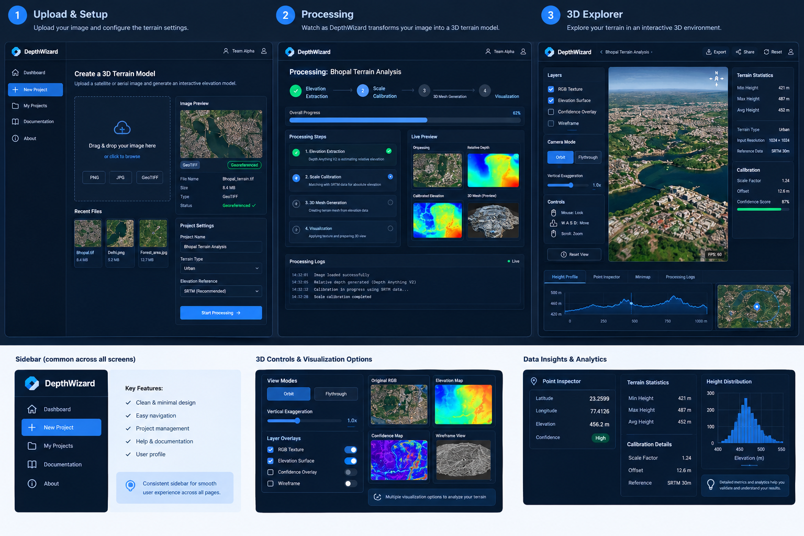
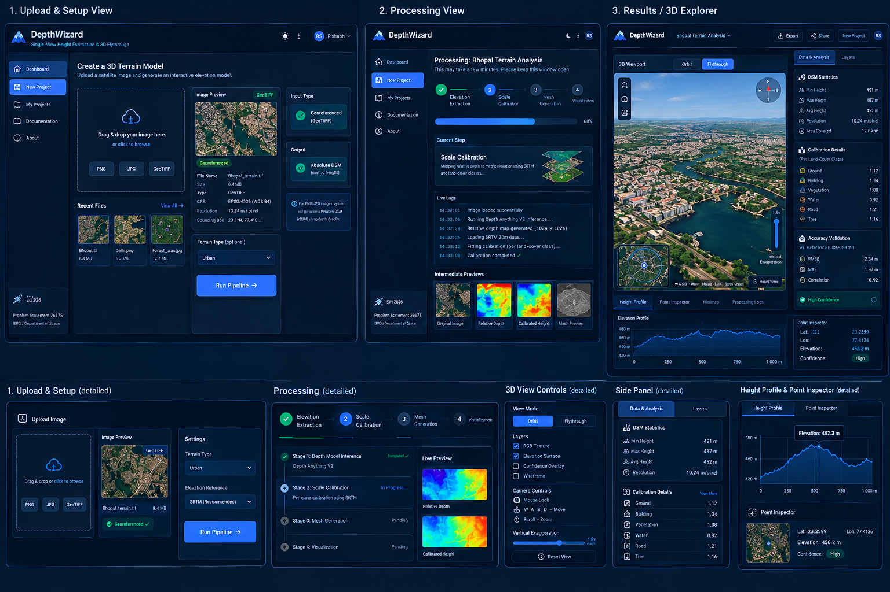

3D Terrain Visualization & Flythrough
Real-time browser-based 3D terrain rendering powered by Three.js. Includes first-person flythrough navigation, cross-section elevation profiling, point elevation inspection, and toggleable Monte Carlo uncertainty overlays.
Interactive 3D Viewport Demonstration
GPU vertex displacement from 16-bit decoded heightmaps textured with optical RGB

Optical Input & 3D Surface Outputs
Sample paired outputs processed through Depth Anything V2 and semantic scale calibration.

Urban Fabric Elevation Reconstruction
Dense commercial structures with sharp rooftop boundaries. Building height error reduced by ~44% via per-class calibration.

Mixed Urban & Vegetation Canopy Model
Preserves tree canopy morphology without smoothing adjacent ground or road surfaces.
Scientific Architecture & Analytics Diagrams
Click any figure to open the high-resolution vector inspection modal.

Depth Backbone & GAMUS
Resolution of nadir remote-sensing domain gap.

Per-Class Scale Calibration
Independent affine regression across 6 land-cover masks.

Uncertainty Heatmap
Variance quantification across N stochastic passes.

Elevation Cross-Section Tool
2D elevation profiling between arbitrary terrain points.

3D Flythrough Viewport
First-person controls with vertex displacement.